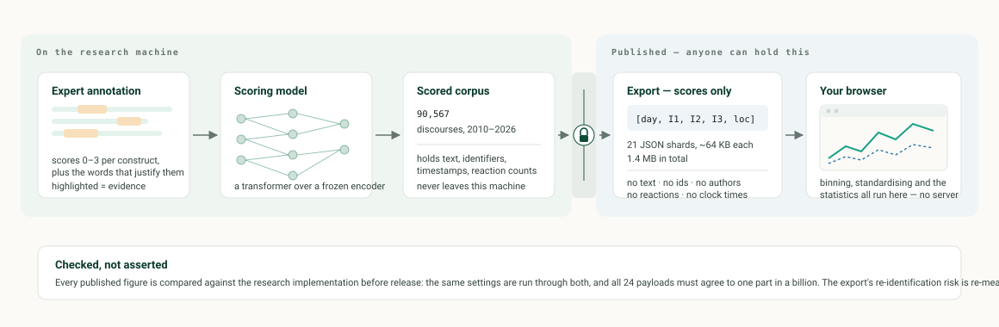

Data Source
Where the numbers come from
Three independent sources, deliberately kept apart: what people said, what the weather did, and which events actually happened. Nothing in the wellbeing measurement knows about the climate record, so any relationship between them is a finding rather than a construction.
Discourse
Public social-media discourse
Irish flood-related public discourse, scored for the three wellbeing constructs by a transformer model trained on expert-annotated examples with marked evidence words.
90,567 scored discourses
2010–2026 · Cork, Galway, national
Climate
Monthly rainfall
Station rainfall from the Central Statistics Office (MTM01), expressed against the 1991–2020 long-term average so a wet month is legible as wet rather than merely numerous.
204 months
CSO PxStat · monthly resolution
Events
Storms and floods
Named storms from the Met Éireann Storm Centre and major flood episodes curated from RTÉ, the Irish Examiner, FloodList and OPW reports, each dated to its days of Irish impact.
78 named storms · 31 flood episodes
dated catalogue, 2015–2026
The global series on this page — temperature, emissions, sea level, flood counts and the El Niño index — are separate again, and come from HadCRUT5, the Global Carbon Budget, Church & White / UHSLC, EM-DAT and NOAA CPC. They set the context; they are not inputs to the wellbeing measurement.

Flood & Wellbeing — the interactive application
The wellbeing index against the climate record, a window around any storm or wet period you pick off the rainfall series, and the distributions behind every number. It runs entirely in your browser.